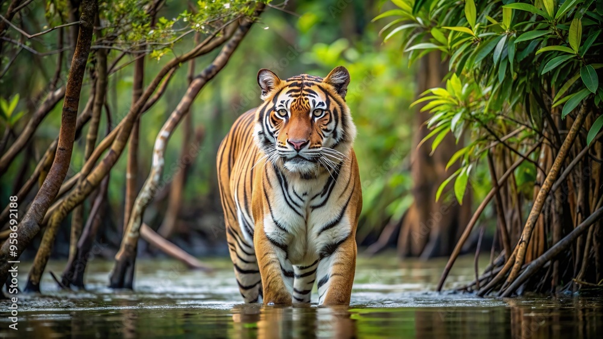

Aditya Narayan Bhandari
A
B
C
D
E
F
Aditya Narayan Bhandari
My ambitions are to become a researcher and probably find my own startup.
My hobbies include playing the harmonica and photography.
(a-b)2 = a2-2ab+b2
2H2+O2=2H2O
#include<stdio.h>
#include<stdlib.h>
int main()
{
printf("Account number : 632479193310 Balance : ₹ 100");
}

This is the first paragraph talking about the tiger
The Royal Bengal Tiger (Panthera tigris tigris) is one of the most iconic and majestic big cats in the world. Native to the Indian subcontinent, it is renowned for its striking orange coat with black stripes, a feature that provides excellent camouflage in its natural habitat. This tiger subspecies is the national animal of both India and Bangladesh, symbolizing strength, courage, and resilience. Royal Bengal Tigers are apex predators and primarily inhabit dense forests, grasslands, mangroves, and wetlands. They are most famously associated with the Sundarbans, the largest tidal halophytic mangrove forest, shared by India and Bangladesh. Other habitats include the Terai region of Nepal, Bhutan, and various parts of central and northern India. An adult male tiger can weigh up to 260 kilograms (575 pounds) and measure up to 3 meters (10 feet) in length, including the tail. Females are slightly smaller but equally fierce. Tigers are solitary and territorial animals, marking their territory with claw marks and scent markings.
These magnificent predators primarily hunt deer, wild boar, and other ungulates. They are strong swimmers, often crossing rivers and streams in pursuit of prey. Unfortunately, habitat loss, human-wildlife conflict, and poaching have severely endangered the Royal Bengal Tiger, with fewer than 3,000 individuals left in the wild. Conservation efforts, such as protected reserves and anti-poaching measures, have been critical in protecting this species. The Royal Bengal Tiger remains a symbol of wild beauty and ecological importance, embodying the need for balance between nature and humanity.
Click here to go to top
Click here to contact us
Go here to go to greetings
Acronyms are WHO, RISC
Health Goals
Distance Walked in km
No. of activities completed : progress
I am a student at VIT University. I am from India and I live in Darjeeling in West Bengal. I am pursuing my B.Tech in Computer Science and Engineering. I love to take photographs and play the harmonica.